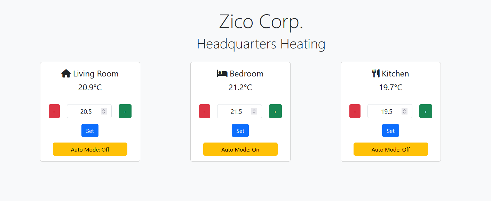

Une vitrine de mes compétences, projets et passions.
Salut, moi c’est Zaki — diplômé en informatique de l’UQAM et passionné par la création de projets tech qui sortent du lot. Que ce soit coder des systèmes intelligents en C++ ou Python ou bricoler avec Arduino, j’adore donner vie à des idées innovantes. Adepte de cybersécurité, d'apprentissage machine et de défis excitants, je suis toujours prêt pour un nouveau projet innovant!

C++

Java

JavaScript

Bash

Git
Ce projet est un site web qui utilise des techniques d'optimisation, notamment le backtracking, pour générer des horaires en fonction des cours entrés par l'utilisateur pour l'UQAM. Le site fournit toutes les combinaisons possibles d'horaires pour la liste de cours donnée.
Le projet est construit avec HTML/CSS/JS pour l'interface utilisateur et Python/Flask pour le backend. Les données sont stockées dans une base de données SQL, qui est mise à jour automatiquement grâce à des scrapers BeautifulSoup.

Fonctionnalités ⚙️ :
- Génère toutes les combinaisons possibles d'emplois du temps;
- Interface simple et intuitive pour entrer les cours;
- Mises à jour automatiques des données via des scrapers;
- Base de données SQL.
Ce projet est une plateforme qui utilise des modèles de réseaux de neurones convolutifs (CNN) pour prédire le graphique du marché boursier du jour en cours. Les prédictions sont basées sur 13 ans de données historiques.
La plateforme est construite avec HTML/CSS/JS/Bootstrap pour l'interface utilisateur et Python/Flask pour le backend. Notez que l'API yfinance expérience actuellement des limites d'utilisation.

Fonctionnalités ⚙️ :
- Prédit le graphique du marché boursier pour le jour en cours;
- Utilise des modèles CNN entraînés sur 13 ans de données;
- Interface simple pour visualiser les résultats de prédictions.
3. Contrôleur de Thermostat IoT ☀️
Ce projet IoT est conçu pour automatiser le contrôle d'un thermostat mécanique à l'aide de plusieurs unités NodeMCU, de servomoteurs, et de capteurs de température et infrarouge. Le système permet de régler et maintenir une plage de température souhaitée via des requêtes HTTP gérées par un serveur central NodeMCU.
Le projet repose sur une base de code C++. Ce projet améliore l'efficacité énergétique tout en modernisant un thermostat existant.

Fonctionnalités ⚙️ :
- Conception d'un système automatisé de contrôle de thermostat utilisant plusieurs unités NodeMCU pour optimiser la régulation de la température dans un appartement;
- Intégration d'un capteur de température et d'un capteur infrarouge avec un servomoteur pour un contrôle précis d’un thermostat mécanique, améliorant l'efficacité énergétique;
- Mise en place d'un serveur central NodeMCU pour gérer les requêtes HTTP des unités clientes, permettant un contrôle fluide et une fonction d’ajustement automatique pour la température souhaitée.